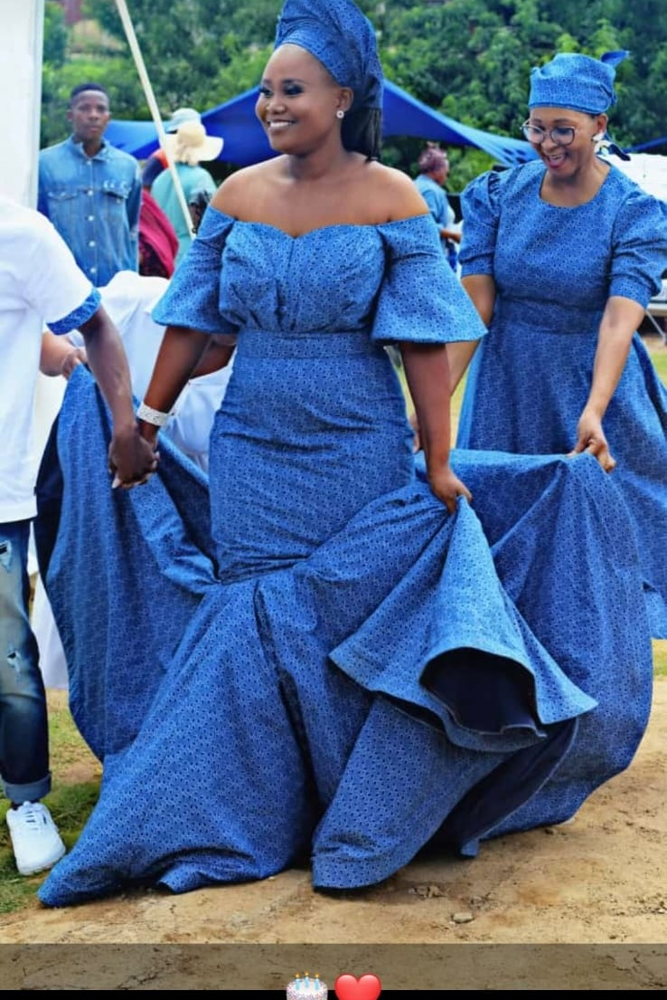
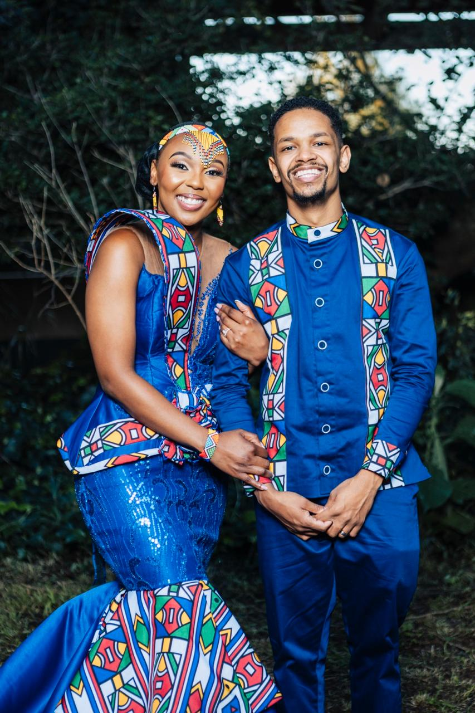

Every occasion,
considered individually.
Every collection below is made to order. Choose a starting point, or bring your own idea to a consultation.
Occasion and everyday wear for women.
From structured gowns to tailored separates, our women's collection covers formal occasion wear and everyday pieces made to your measurements and preferred fabrics.
Book a ConsultationWedding gowns designed around your ceremony.
Bridal commissions begin 4–6 months ahead of the wedding date to allow time for fabric sourcing and a full round of fittings. We also design coordinated bridesmaid dresses, so the full bridal party works as one considered look on the day.
Book a Consultation

Gowns for galas, receptions and race days.
Fitted and structured evening gowns designed for a single event or for repeat wear. We work in a range of fabrics depending on the formality of the occasion and the season.
Book a ConsultationCeremonial wear, designed with your family.
This look pairs a structured satin silhouette with hand-pleated traditional-print panelling for the bride, and a coordinating printed panel shirt for her partner — made for a couple's traditional ceremony. Traditional couture commissions are developed in direct consultation with the client's family on colour, pattern and ceremonial requirements.
Book a Consultation
Coordinated pieces for two.
Designed for couples who want their outfits to complement one another — matching or coordinated fabric, colour and detailing for engagements, traditional ceremonies or shoots. These sashed red-and-white sets were made for three couples attending the same celebration. Coordinated pieces aren't limited to romantic couples — we've also designed matching looks for family members celebrating together, as shown below.
Book a Consultation
One-of-a-kind pieces from our design team.
Signature Designs are original concepts developed by our design team rather than commissioned to a client brief — a starting point for clients who want a distinctive piece with room to adjust the fit, fabric or colour to their own preference. This has included a sequinned gown styled with a matching gele, and a ruffled maternity gown designed for a milestone photo shoot.
Book a ConsultationNot sure where to begin?
Tell us about the event and we'll recommend the right starting point, fabrics and timeline.
Book a Consultation